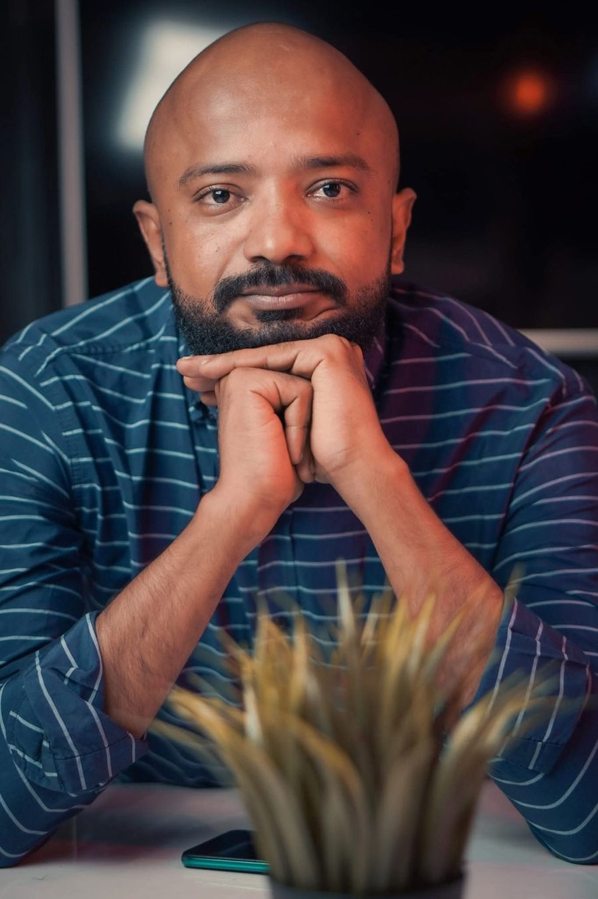

Ghatis Bamussalamغاطس بامسلم·Aden, Yemenعدن، اليمن
I follow small details until they open into human stories.أتتبّع التفاصيل الصغيرة حتى تنفتح على حكايات الناس.
I write, research and build around song, starting from Yemen: who made it, what it carried, and what it can still tell us.أكتب وأبحث وأبني حول الأغنية، منطلقًا من اليمن: من صنعها، وما الذي حملته عبر السنين، وما الذي لا تزال تبوح به.
My name is Ghatis, and in English that means diver. The joke is on me: I can’t swim or dive, and I have drowned twice. Still, I found a sea I go down into without fear: song.اسمي غاطس، وبالإنجليزية Diver. والمفارقة المضحكة أنني لا أُجيد السباحة ولا الغطس، وقد غرقتُ مرتين. ومع ذلك وجدتُ بحرًا أنزل إليه بلا خوف: الأغنية.
I have listened for a long time, for fun first, and each time I went deeper I found worlds: memory, ideas, stories, people. Before I knew there was a field of study for this, I already felt that a song carries more than it seems.أستمع إليها منذ زمن طويل، تسلية أولًا، وكلما نزلتُ أعمق وجدتُ عوالم: ذاكرة وأفكارًا وحكايات وأشخاصًا. وقبل أن أعرف أن لهذا علمًا وتخصصًا، كنتُ أحسّ أن الأغنية تحمل أكثر مما تبدو.
I can’t swim, but I’m good at going down. The method is my gear: go down with one small detail, stop where the evidence runs out, and come up with what I saw.لا أُجيد السباحة، لكنني أُجيد النزول. والمنهج عدّتي: أنزل بتفصيلة صغيرة، وأتوقف حيث ينقطع الدليل، وأصعد بما رأيت.

Each one starts with a small question.كل عمل يبدأ من سؤال صغير.
Madkāمَدْكى
If the sound survived, did the knowledge that made it understandable survive? Eight projects, from Yemeni song to Arabic song on other shores.إذا بقي الصوت، هل بقيت المعرفة التي جعلته مفهومًا؟ ثمانية مشاريع، من الأغنية اليمنية إلى الأغنية العربية في ضفاف أخرى.
Read the full projectاقرأ المشروع كاملًاThe same question, elsewhereالسؤال نفسه، في مكان آخر
A Paris crowd finishes an Arabic line for Cheb Khaled. Five Egyptian songs sing the self across thirty years.جمهور في باريس يُكمل سطرًا عربيًا عن الشاب خالد. وخمس أغنيات مصرية تغنّي الذات عبر ثلاثين عامًا.
Visit the shoresزر الضفافDhabyi Al-Yemen«ظبي اليمن»
An interview detail became a verified thread, a podcast and a longer article.تفصيلة في مقابلة صارت سلسلة موثّقة، ثم بودكاست، ثم مقالًا أطول.
Read the storyاقرأ الحكايةTEDxSealineRd
“The Yemeni song is a treasure in a cave.” A talk on what we choose to preserve.«الأغنية اليمنية كنزٌ في كهف.» حديث عمّا نختار أن نحفظ.
See how the talk is builtكيف بُني الحديثYemeni Music Encyclopediaالموسوعة اليمنية للغناء
A Twitter Space question about attribution became an open, community-built music archive, launched on Yemeni Song Day, 1 July 2022.سؤال في نقاش صوتي على تويتر عن نسبة الأغاني صار أرشيفًا موسيقيًا مفتوحًا بُني بمشاركة الناس، وأُطلق في يوم الأغنية اليمنية، 1 يوليو 2022.
A small cultural detail, then a larger human question.تفصيلة ثقافية صغيرة، ثم سؤال إنساني أكبر.
When the Audience Sang in Arabic
A moment at Cheb Khaled’s concert, read as a historical source. Who carries the line when the singer stops?لحظة في حفل الشاب خالد تُقرأ بوصفها مصدرًا تاريخيًا. من يحمل السطر حين يتوقف المغنّي؟
ReadاقرأHow a chance encounter in a bar became a rock iconكيف تحولت الصدفة في حانة إلى أيقونة روك.. وإلى درس في زمن السوشيال ميديا
From the pub behind “Sultans of Swing” to bovarysme and the performed self on social media.من الحانة التي وُلدت فيها «Sultans of Swing» إلى البوفارية واستعراض الذات في وسائل التواصل.
Read on Ma’anaاقرأ في «معنى» ↗Curiosity gives me the story. Method tells me how far I may tell it.الفضول يمنحني الحكاية، والمنهج يخبرني إلى أي مدى يحق لي أن أرويها.
Encounterألتقي
A lyric, interview detail, audience remark or scene catches me.تلفتني كلمة أو تفصيلة أو تعليق من جمهور أو مشهد عابر.
Pauseأتوقف
I stop at the odd detail and ask why it feels important.أقف عند التفصيلة الغريبة وأسأل لماذا تبدو مهمة.
Verifyأتحقق
Chronology, sources, a second account, the original material.التسلسل الزمني، المصادر، رواية ثانية، المادة الأصلية.
Connectأصل
An unexpected parallel with the same emotional or structural logic.تواز غير متوقع يحمل المنطق العاطفي أو البنيوي نفسه.
Ask the human questionأسأل السؤال الإنساني
The song becomes a door into memory, love, identity, work, place or time.تصير الأغنية بابًا إلى الذاكرة والحب والهوية والعمل والمكان والزمن.
Returnأعود
I come back to the first detail, and now it means something else.أعود إلى التفصيلة الأولى وقد صار لها معنى آخر.
The stop rule: if the evidence chain breaks, “we do not know yet” is a valid ending.قاعدة التوقف: إذا انقطعت سلسلة الدليل فإن «لا نعرف بعد» خاتمة صحيحة.
More than a decade of communications and digital production.أكثر من عقد من الاتصال والإنتاج الرقمي.
Adeny Industryعدني إندستري
Content writer, with graphics and design credits on selected episodes. Early experience in a collaborative Yemeni YouTube format.كاتب محتوى، مع اعتمادات في الرسوم والتصميم لبعض الحلقات. تجربة مبكرة في عمل يوتيوبي يمني جماعي.
Short video and motionفيديو قصير وموشن
Scripted and edited short video and motion content, alongside design and bilingual digital production.كتابة وتحرير مقاطع قصيرة ومحتوى موشن، إلى جانب التصميم والإنتاج الرقمي ثنائي اللغة.
Planning, review, channelsتخطيط ومراجعة وقنوات
Annual media planning, editorial review, channel management, stakeholder coordination and bilingual multimedia output.التخطيط الإعلامي السنوي، والمراجعة التحريرية، وإدارة القنوات، والتنسيق مع الأطراف المعنية، وإنتاج وسائط متعددة بلغتين.
Communication consultingاستشارات الاتصال
Strategy and content for social media, working on my own.استراتيجية ومحتوى لوسائل التواصل الاجتماعي، بعمل مستقل.
Contactتواصل
Say hello.تحدّث إليّ.
For research conversations, public storytelling and work on Arabic and Yemeni music heritage.للحوار البحثي، والسرد العلني، والعمل على التراث الموسيقي العربي واليمني.
ghatis.bamussalam@gmail.com
Languages: Arabic, English, German. Background in German literature.اللغات: العربية والإنجليزية والألمانية. خلفية أكاديمية في الأدب الألماني.